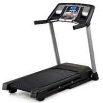
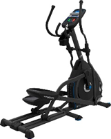
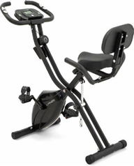
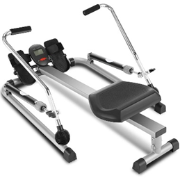
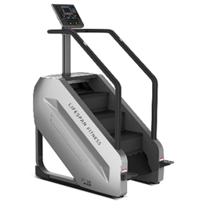

Cardio Area
The cardio area is equipped with a range of machines designed for cardiovascular workouts.
Target Audience:
Suitable for those looking to improve their cardiovascular health, lose weight, or build endurance.
Equipments (click for more informations):




